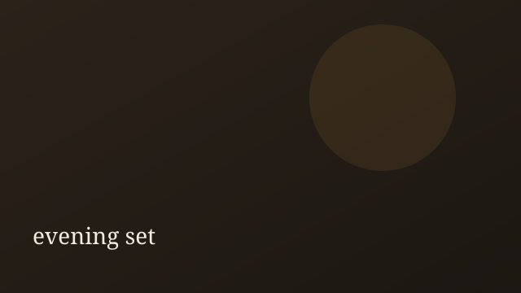
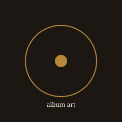

watch URL 想定 · fixture placeholder
Fictional fixture · CMS Kit
夜の余白に、声を置く。
東京を拠点に活動する架空のジャズボーカリスト、如月澪（Mio Kisaragi）。スタンダードとオリジナルを織り交ぜたクラブセットをお届けします。

Introduction
このサイトは Musician CMS Kit の第2実証用に手書きした静的見本です。実在の人物・会場・作品には依存しません。
Upcoming live
Schedule 一覧-
2026-08-07 · Fri
Blue Lantern Duo — Early Set
-
2026-08-07 · Fri
Blue Lantern Duo — Late Set
-
2026-08-15 · Sat
真夏のバラード夜会 — ゲスト多数のロングタイトルでレイアウトを試す特別公演
Featured video
VideosLatest release
Discography
Paper Lanterns
夜の室内楽とボーカルのための架空フルアルバム。
Follow
CMS Kit static fixture — external crawl not required. All content is fictional.